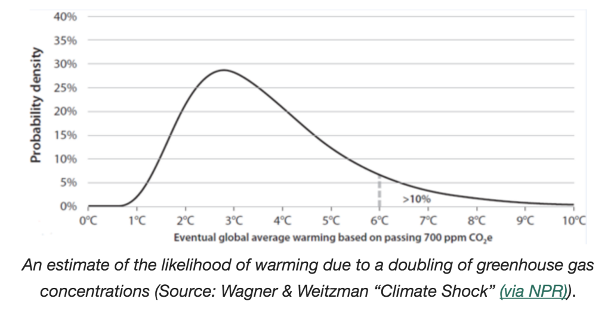

If you got here, I assume this means that the climate may or may not be changing, but nothing
needs to be done about it.
In many cases, actions that an individual can take to help reduce the chance of climate change
also correlate to the individual saving money. Many costs go along with the amount of energy
used to create a purchased good or product.
Changing opinions, educating people, and changing government regulations can have many effects.
Climate change is dependent on actions of billions of people and millions of organizations.
Another example:
California HOV lanes and Losing HOV and
HOV Co2.
I can help
The average American generates 4 times the amount of some countries and many more times
than that of other countries. In other words an American can reduce the most sometimes
quite easily. Nearly everybody can make choices about what to purchase.
Good job. But there is always more that can be done. You may be able to change other people's minds and
can always improve your own actions.
Change Minds
How much will temperature rise
The temperature rise is impossible to exactly predict because it depends on so
many factors such as the falling costs of solar panels and batteries, possible
carbon capture technologies, political changes, etc.

This graph shows that if humans do not mitigate climate change, there is about a
10% chance that the temperature could be above 5 degrees C. This graph shows
that lower than .8 degrees rise has zero probability because the rise has already
been above .8 degrees. This shows that the most likely rise is about 3 degrees C
(5.4 degrees Fahrenheit), but this is very difficult to predict accurately.
What are the predicted effects of climate change
It is impossible to exactly predict all effects of climate change because it is
dependent on How much will temperature rise.
The effects do not increase linearly with temperature rise and are actually much
worse as the temperatures get higher.
The number of people that must contribute is impossible to say for certain because the
effects of climate change are dependent on the amount of change of temperature rise and
the amount of ocean acidity. See
What Are Predicted Effects Of Climate Change and
How much will temperature rise for some of the reasons.